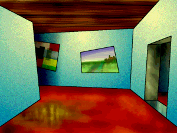
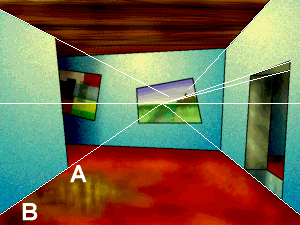
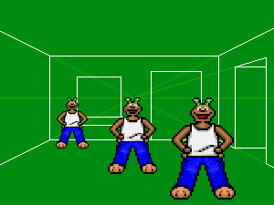
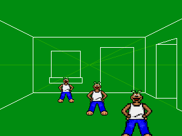
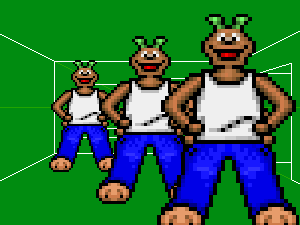

SLUDGE's setScale command is a useful little blighter. However, if you're still thinking in terms of "I want the character to be 100% here and 25% here" it might seem a little confusing. Here's a quick rundown of how to use it successfully.
Load your scene into a paint program. Now, draw a line along the horizon - you may need to imagine one, which is fine. Basically, the horizon is the line at which the size of a character will become zero... the edge of the world, if you like. Take the following room...

Fig. 1: Welcome to the Tutorial City Art Gallery
The surfaces which are parallel here are the wall on the left and the wall on the right (including the doorway). Most of the lines out of which these walls are made converge at one point - the infamous "vanishing point" of which myth and lore have spoken. The vanishing point is on the horizon - so, we now have our horizon. OK, so not all the lines converge at the same point... but after all, the look of the room is cartoony, and the walls are both slightly tilted. Finding a horizon isn't an exact science.

Fig. 2: Vanishing point and horizon
With the horizon defined, you can now see how a character can be drawn at the right height compared against its surroundings no matter where it is drawn on the screen... for example, should a character be half as tall as the left-hand wall at point A, it'll also be half as tall as the left-hand wall at point B. Or three quarters of the height, or a 20th of the height, or whatever.
Now that the horizon's been found, it's all a matter of how tall the character should be in the room. This is defined by the second parameter of the setScale function. Setting this parameter to the exact height of a character* means that the top of the character's head will stay at the same level no matter where they are on the screen. Set the parameter to a value greater than the height of a character makes the character smaller, and the top of their head will move down the screen as they get closer to the camera. Set the parameter to a value smaller than the height of a character and the top of the character's head will get higher as the character moves towards the camera.
* Assuming the character's hotspot is on the bottom row of pixels

Fig. 3: Second parameter = height of character
 height of character">
Fig. 4: Second parameter > height of character

Fig. 5: Second parameter < height of character
More specifically, the second parameter of setScale defines which part of the character stays at the same level when moving around a scene. Hence, for the top of a character's head to stay at the same level, the second parameter passed to setScale should be the distance in pixels between the top of the character's head and the character's hotspot... in other words, the height of the character.
For the character's elbows to stay at the same level (figure 5) the parameter should be the distance in pixels between the character's elbows and the character's hotspot... and so on for other body parts. In the case of values greater than a character's height (figure 4) imagine a tall hat on the top of the characters head and you can see that the same rule still applies.
SLUDGE and this SLUDGE documentation are copyright Hungry Software and contributors 2000-2010